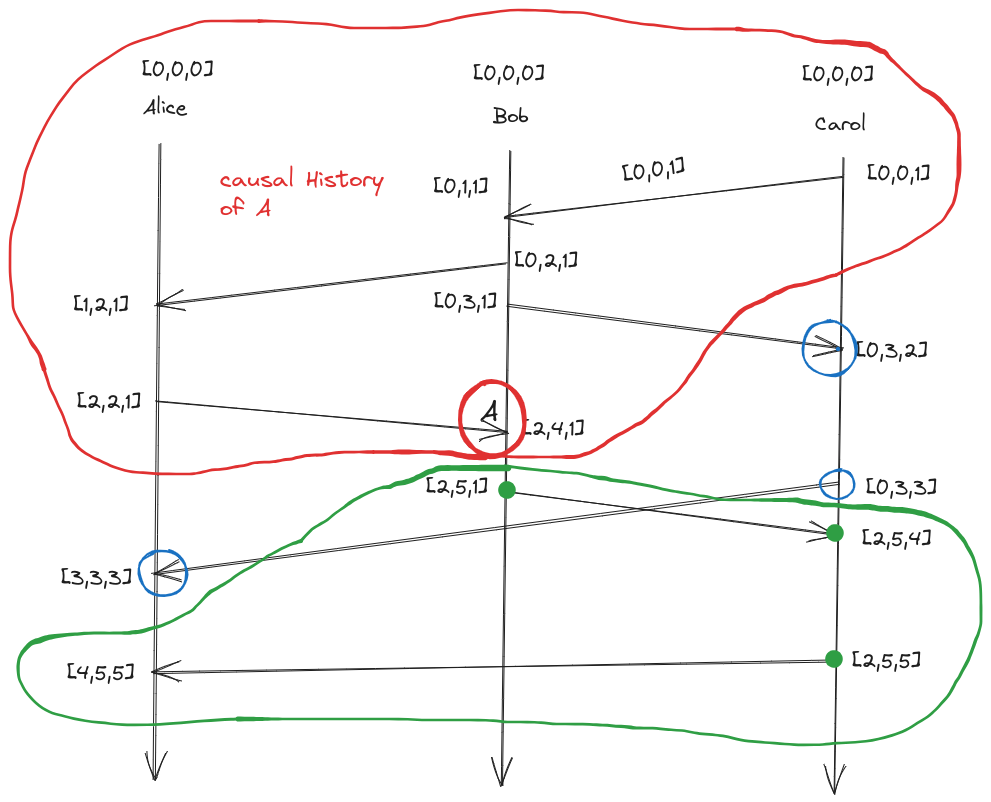

CSE138: Notes
-
CSE138 (Distributed Systems) L3: partial orders, total orders, Lamport clocks, vector clocks
-
Happens Before:

Figure: Happens Before relationship - if A and B are 2 events in the same process and A happens before B then A -> B
- if A is a send and B is a corresponding receive then A -> B
- if A -> B and C -> B then A -> B (transitive)

- How are A and E related: A -> B and B -> E so A -> E
- How are D and A related: Not related
- What all places we can go from A ?
- we can go to B,E,F,G but not D
- we say that A and D are concurrent
- What all places we can go from A ?
-
Partial Order/Partially Ordered Set:
- A set S, together with a binary relation often written as $a \leq b$ (a is related to b this can be the happens before relationship) that lets us compare things in set S and has the following properties
- Reflexivity: $ x \in A, \ a \leq a $
- Anti-symmetry: for all $a, b \in A$ if $a \leq b$ and $b \leq a$ then $a = b$
- Transitivity: $a,b,c \in S$ if $a \leq b$ and $b \leq c$ then $a \leq c$
- We have 8 events ${A, B, C, D, E, F, G, H}$
- We are checking that whether happens before is actually a partial order
- Transitivity is satisfied
- Anti symmetry is vacuously true
- Reflexivity is untrue as $a \leq a$ a happens before a is untrue or doesn’t make sense
- The above shows that happens before is not a partial order or can be said irreflexive partial order
- Example of partial order
- set containment
- the subsets of set of ${a,b,c}$ is a partial order
- ${∅,{a},{b},{c},{a,b},{a,c},{b,c},{a,b,c}}$
- ${a} \leq {a}$ An element is a subset of itself
- ${a,b} \leq {a,b}$ and ${a,b} \geq {a,b}$
- ${a} \subseteq {a,b}$ and ${a,b} \subseteq {a,b,c}$ then ${a} \subseteq {a,c}$
- Elements that are not comparable, for those happens before relation says they are concurrent, those are the elements not ordered by partial order
- In total order every pair of event is ordered
- A set S, together with a binary relation often written as $a \leq b$ (a is related to b this can be the happens before relationship) that lets us compare things in set S and has the following properties
-
Clocks
- Physical Clocks
- Time of day clocks
- monotonic clocks
- Logical Clocks: Ordering of events
- Lamport clocks
- Assigning number to events
- Denoted as LC(A): Lamport clock of event A
- clock condition: if $a \to b$ then $LC(A) \leq LC(B)$
- Lamport clocks are consistent with causality
- Lamport clock algorithm
- Every process has to keep a counter initialized to 0
- On every event on a process that counter has to increment by 1
- When you send a message, a process needs to include its current counter in the message
- When receiving a message, a process sets its counter to the max(local-counter, received-counter) + 1

- if $a \to b$ then $LC(A) \leq LC(B)$ but the reverse is not true

- Lamport clocks are consistent with (potential) causality
- A -> B then logical clock of A < Logical clock of B
- characterizes causality
- if LC(A) < LC(B) then A -> B Lamport clocks do not have this property
- What something we can do with Lamport clocks ?
- what can we do with P -> Q
- we can take its contrapositive
- if P implies Q then
- not Q implies not P or $\neg Q \Rightarrow \neg P$
- $A \rightarrow B \ \Rightarrow \quad LC(A) < LC(B)$
- $\neg \ (LC(A) < LC(B)) \Rightarrow \neg \ (A \to B)$
- We can rule out the possibility that A happens before B
- It might be the case that $ B \rightarrow A \ or \ A \parallel B $
- Lamport clocks can help in ruling out things
- Lamport clocks
-
Vector Clocks
- $A \rightarrow B \ \Rightarrow LC(A) < LC(B)$ (Lamport clocks)
- LC are “consistent with causality”
- The other direction (“characterizes causality”) doesn’t hold
- Clocks that is consistent with causality and characterizes causality
- $A \rightarrow B \ \Leftrightarrow LC(A) < LC(B)$
- Every process keeps a vector (length N for N processes) of integers initialized to 0 $[0,0,0]$
- On every event, a process increments its own vector clock(all events: sends, receive and internal events)
- when sending a message, a process includes its current vector clock (after the increment from step 2, because sends are events)
- when receiving a message, a process will update its vector clock to the maximum(local,received). local is its own vector clock after incrementing its position, because receives are events
- Max of vectors
- $[1,12,4]$ and $[7,0,2]$ will be $[7,12,4]$ (pointwise maximum)
- Suppose we have a vector clock of $[5,0,0]$ for alice, bob and carol this means alice has seen 5 events whereas bob and carol haven’t seen any
- Physical Clocks
-
-
CSE138 (Distributed Systems) L4: vector clocks, FIFO/causal/totally-ordered delivery
- 
- All the elements in the red circle constitute the causal history of A
- Their vector clocks are smaller than A (the value of elements are smaller in every position)
- The events in the blue circle are the events that are concurrent or causally independent with A
-
Protocols
- A set of rules that processes use to communicate with each other
-
correctness property of execution
- FIFO Delivery: if a process sends message m2 after m1, any process delivering both delivers m1 first and then m2
- sending a message is something you do
- Receiving a message is something that happens to you
- Delivering a message is something you can do with a message you receive (you queue up a received messages and wait to deliver them)
- Violation of FIFO delivery

- What can we do to implement FIFO delivery
- Sequence numbers: Tag your messages with sender id and sender sequence number
- senders increment there sequence number after sending the message
- if a received message sequence number is the SN of the prev message from that sender + 1, deliver that message
- What will happen if a message doesn’t gets delivered

- using sequence numbers only works well if you have reliable delivery
- TCP has reliable delivery
- suppose we don’t have reliable delivery

- Vacuously satisfies FIFO delivery
- After every message receive bob can send ack, this also guarantees FIFO delivery but is also slow and ack could also get lost

- FIFO Delivery: if a process sends message m2 after m1, any process delivering both delivers m1 first and then m2
-
Causal Delivery
- if m1 send happened before m2 send then m1’s delivery must happen before m2’s delivery

- How to enforce causal delivery? (Hint: Using vector clocks)
- Correctness property of execution
- FIFO delivery
- causal delivery
- Totally ordered delivery
-
Totally Ordered Delivery
- if a process delivers m1 and then m2, then all processes delivering both m1 and m2 deliver m1 first and then m2